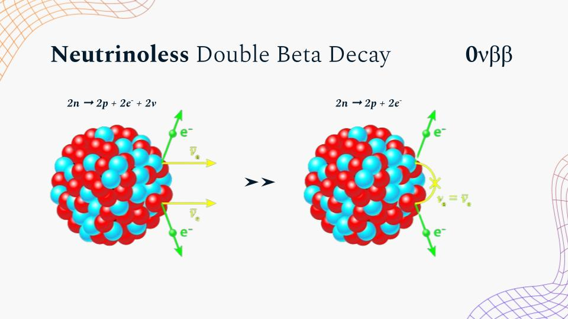
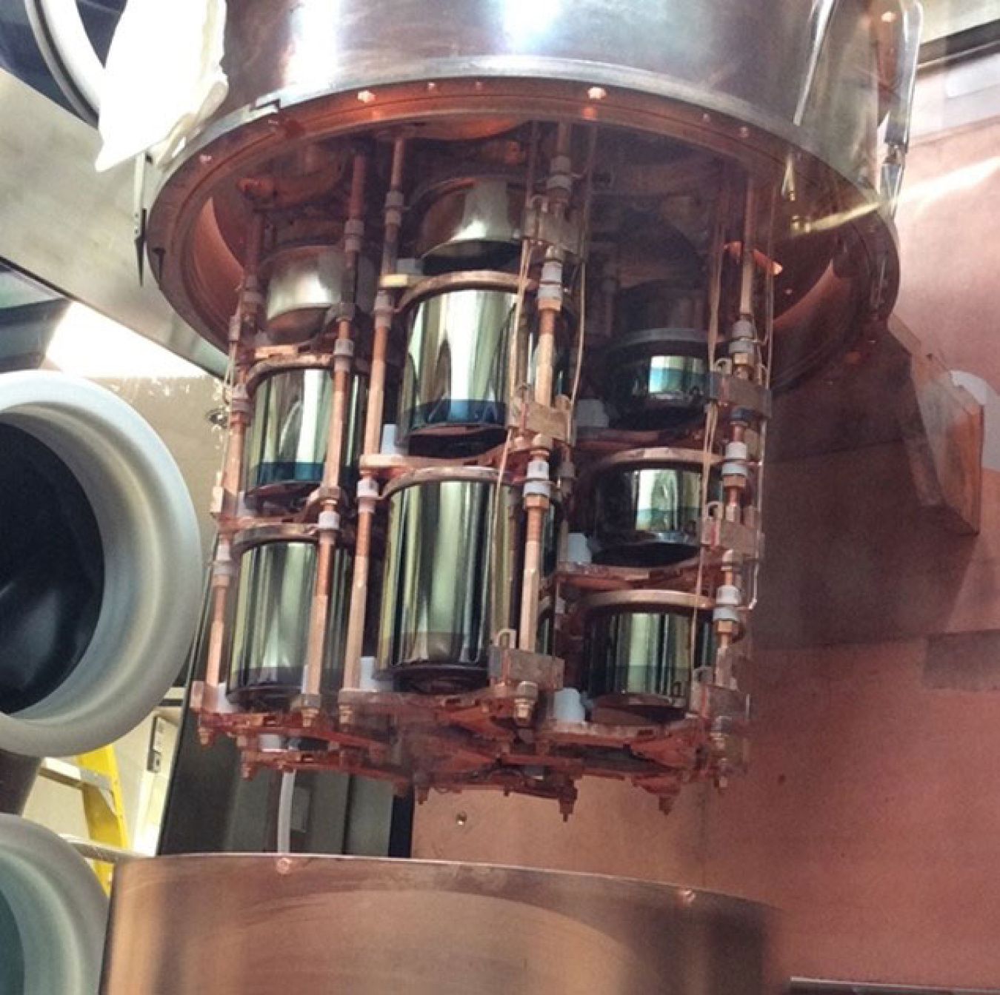

The Data Science of Existence
Why does anything exist at all? Our team spent the last two quarters building the digital "eyes" needed to find the smoking gun for one of the deepest mysteries in physics.
A Cosmic Imbalance
According to the Big Bang theory, the universe should have been created with equal parts matter and antimatter, leading to total annihilation. The fact that we exist at all proves a cosmic imbalance — but physics has no agreed explanation for why.
Majorana Particles
If neutrinos are their own antiparticles — called Majorana particles — it would prove that a lepton-number violating process exists, explaining why matter won the "tug-of-war" in the early universe and allowed us to exist today.
Our Role
Because neutrinoless double beta decay is so rare — with a half-life trillions of times longer than the age of the universe — the real-world signal is buried under millions of background noise events. Our group's role was to move beyond traditional physics cuts by using machine learning to perform Pulse Shape Discrimination, providing the high-precision software eyes that could finally allow the LEGEND and Majorana experiments to see the origin of our matter-filled universe.
Neutrinoless Double Beta Decay
A hypothesized nuclear process that, if observed, would rewrite our understanding of particle physics and the origin of matter.

Standard Double Beta Decay
Two neutrons convert into two protons, emitting two electrons and two neutrinos. This process has been observed experimentally.
The Neutrinoless Version
In the hypothesized neutrinoless version, no neutrinos are emitted. This is only possible if neutrinos are Majorana particles — their own antiparticles.
Why It Would Matter
Observing this process would confirm lepton number violation and answer fundamental questions about the origin of matter in the universe.
The Majorana Demonstrator
An experiment using ultra-pure germanium detectors, shielded deep underground, to search for evidence of neutrinoless double beta decay.
How It Works
When energy is deposited inside the detector, it produces a tiny electrical waveform. The shape of this waveform contains information about what type of interaction occurred.
Single-Site vs Multi-Site Events
Signal-like interactions tend to produce single-site events (SSE), while background radiation typically produces multi-site events (MSE) that must be filtered out.

Our Approach
By extracting high-dimensional features from raw detector waveforms, we trained gradient boosting models to distinguish signal from background with higher precision than traditional cut-based methods.
Feature Extraction
We extracted physics-informed waveform features — including A/E (current amplitude), drift time, LQ80, and 23 others — capturing pulse shape, timing, tail behavior, gradient, and frequency characteristics.
Classification
XGBoost and LightGBM models were trained to classify localized Single-Site Events (SSE) — the potential signal — from scattered Multi-Site Events (MSE), the background noise.
Energy Regression
Regression models estimate continuous energy values from extracted features, improving reconstruction of detector events and supporting downstream physics analysis.
What We Did — and Didn't Do
This project is a research-oriented proof of concept. Understanding its boundaries helps interpret the results correctly.
Stakeholders
This work directly supports physicists at the Majorana Demonstrator and LEGEND experiments who need better software tools to filter signal from background in germanium detector data.
What We Built
We engineered 26 physics-informed waveform features from scratch and trained classification and regression models on them. All feature code and model pipelines were written by our team.
Known Limitations
Our models were trained on a single detector dataset and may not generalize directly to other detectors or configurations. Class imbalance between SSE and MSE events required careful handling and may still affect recall on minority classes.
What We Did Not Do
We did not perform end-to-end signal detection or claim a physics discovery. This project improves the discrimination step in the analysis pipeline — upstream data collection and downstream statistical analysis were outside our scope.
Key Results
Our models successfully classify events and estimate energy from waveform features, supporting the search for rare physics signals in the Majorana Demonstrator and LEGEND experiments.
Classification
Models trained on engineered waveform features successfully distinguish single-site from multi-site events across four PSD label types, outperforming traditional cut-based approaches.
Energy Prediction
Regression models estimate continuous energy values from extracted features, improving reconstruction accuracy of detector events.
Impact
Improved event classification helps the LEGEND and Majorana experiments focus on the rare interactions that could reveal the origin of matter in the universe.